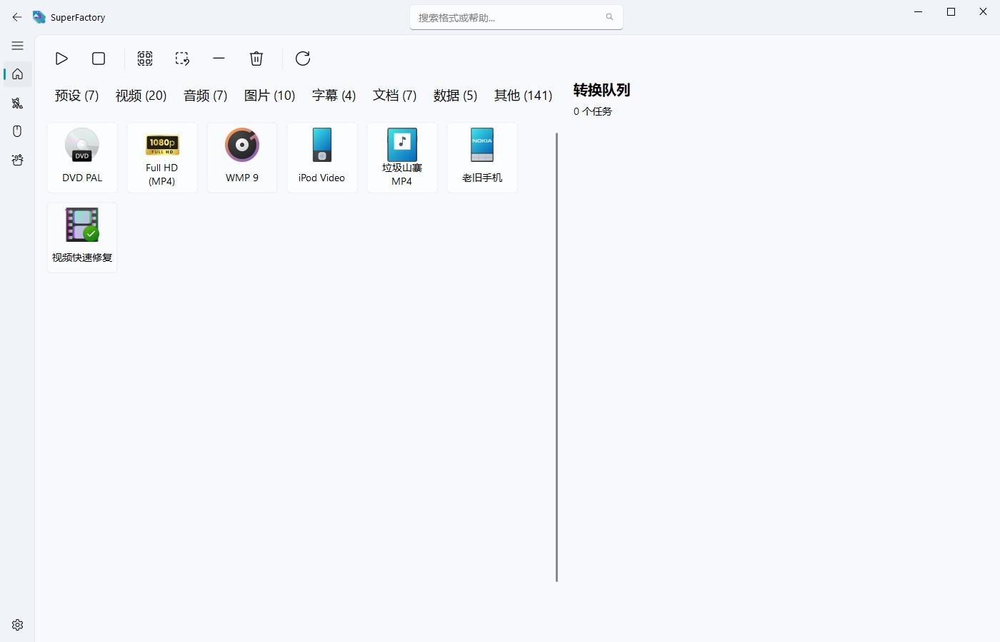
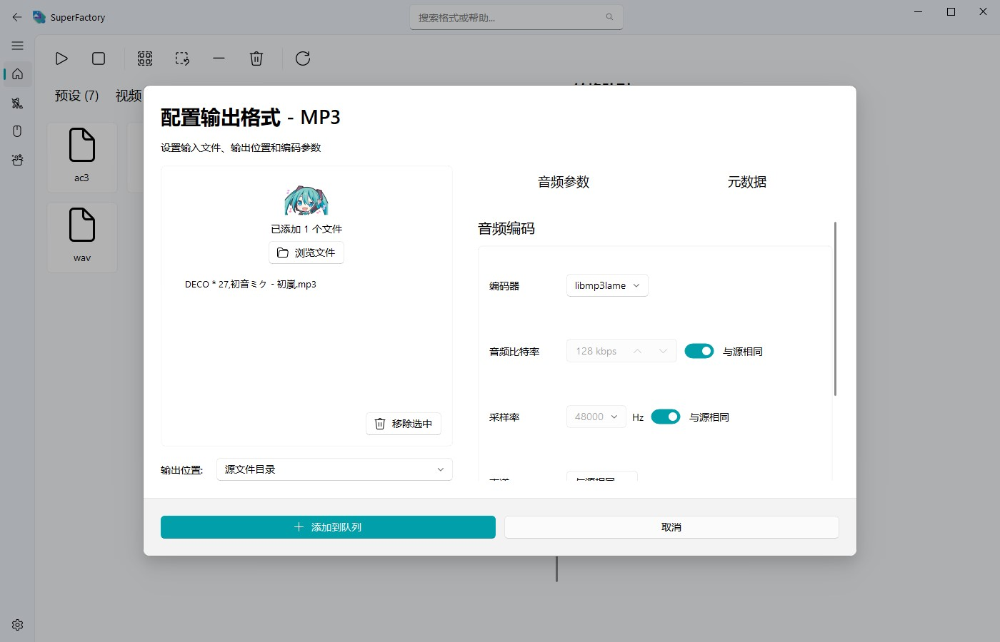
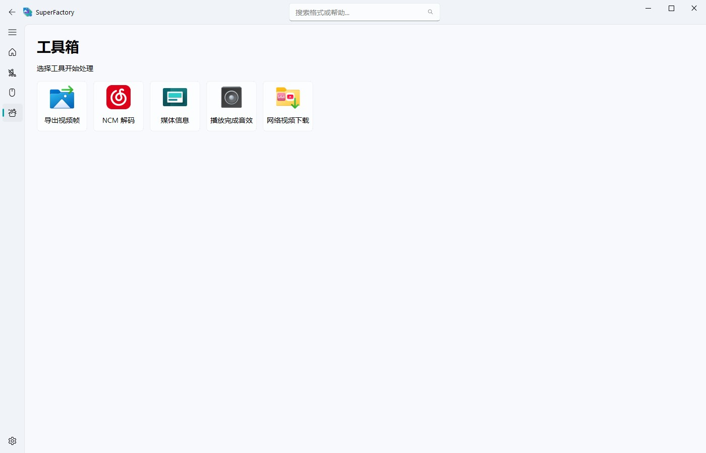
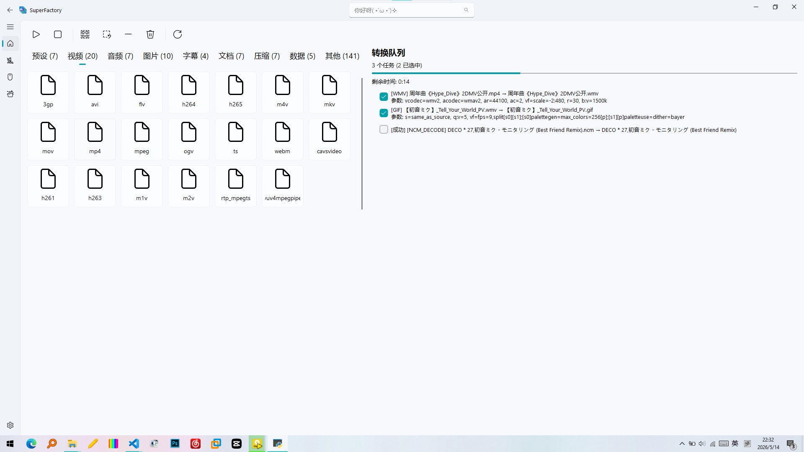

不知道你有没有遇到过这种情况：
- PDD上买的便宜MP4播放器居然放不了MP4
- 想把PDF文件转换成Word文档，但都tm要钱
- 充了网易云音乐VIP，但下载的音乐只能在客户端中播放
- 想找一个免费的格式转换器，结果要么一堆广告要么太难操作
看来，该我出手了。
经过数月的开发，我的最新项目 SuperFactory 终于进入了开放测试阶段！SuperFactory 是一个集成了各种实用工具的多功能平台，旨在为用户提供一站式解决方案，无论是媒体转换还是文档处理都能轻松应对。
本程序具有以下功能：
- 预设功能：无需面对复杂的参数，只需要选择你的目标设备，把文件拖进去就能转换。
- 媒体转换：支持各种音视频图片格式的转换，轻松解决格式不兼容的问题。
- 文档处理：提供PDF转Word、epub，odt等多种文档转换功能，满足办公需求。
- 数据处理：支持JSON，YAML，XML，INI等多种数据格式的处理。
- 字幕/歌词处理：对srt，ass，lrc等转换。
- 压缩包转换：对WIM，ISO，TAR，XZ等不常见格式进行转换。
- 视频下载：从B站，CCTV等平台下载高清视频，免登录，不要钱。
- NCM解码：将网易云音乐加密音乐格式解密，方便离线收听。
- 视频快速修复：一键修复文件头损坏无法播放的视频文件。
- 媒体压缩：智能压缩音视频文件，节省存储空间。
- 罕见格式支持：对cur，ani等罕见格式提供支持。
- 简单媒体处理：媒体文件旋转，翻转，裁剪，元数据编辑等功能。
- [实验性功能]ヴァンパイア 模式从别的应用程序中获取ffmpeg，pandoc等，节省存储空间。
- [实验性功能]右键菜单集成文件资源管理器右键文件就能选择转换
SuperFactory 使用 PySide6 和 QFluentWidget 开发，基于 FFmpeg、Pandoc 和 7z 等开源软件。本程序使用 GPL 协议开源。
安装
由于现在程序在测试阶段，直接给出完整程序压缩包，已经附带ffmpeg，pandoc等环境，解压就能直接使用，但压缩包体积可能较大。
画廊



